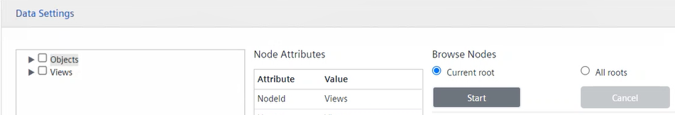
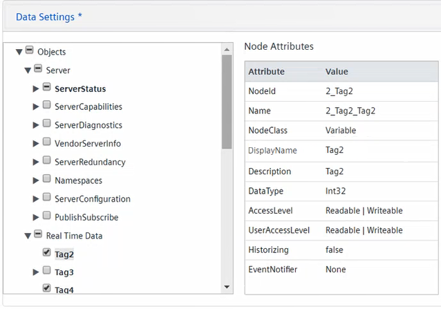
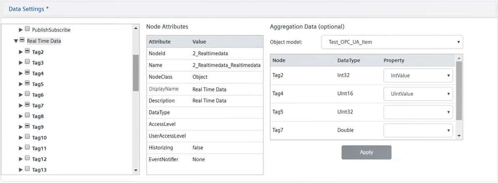
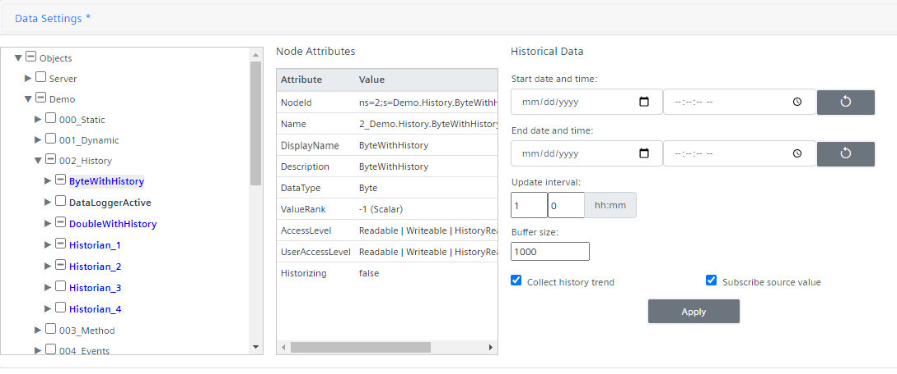

Configure Data Settings
In this procedure you will set point data one by one.
For bulk operations, see:
- In the OPC UA Client Configuration section, click Data Settings.
- The tree is collapsed.
NOTE: If the tree was previously expanded, but then you enabled the visibility of properties when browsing objects or variables in Server Settings, the tree appears collapsed to indicate that tree data has been refreshed to allow displaying those properties. - If required, you can automatically browse server nodes.
NOTE: Typically, automatic browsing for all nodes might result in a time-consuming operation. In addition, custom settings of specific configuration options might be required. For more information, see OPC UA Adapter Settings XML Files. - Do the following:
a. Select the desired root node (Objects or Views).
b. Under Browse Nodes, set for which roots the browse of all nodes will be carried out:
- Current root (default; Objects or Views)
- All roots (both Objects and Views)
c. Click Start. 
- The browse of all nodes—for the current root or all roots—is automatically carried out.
- Once a message informs you about the operation outcome (completed or failed), click OK to close the dialog box.
NOTE: Browse nodes can be very long. Once started, always wait until the browse nodes outcome message displays. Alternatively, you can click Cancel to stop the in progress browse nodes. Also in this case, wait until the outcome message displays. - You can now define the nodes to import.
- To select only one or multiple nested nodes under a parent node for the import, do the following:
a. Click next to this parent node to browse the subtree and disclose the nested structure.
b. Select only the check boxes that correspond to the nested nodes you want to export. (A check mark displays on the check boxes, which indicates that those nodes are now selected for the export.) - Plain text indicates nested nodes with
Attribute = NodeClassandValue = Object. This identifies aggregators of other aggregators or variables. - Bold type indicates nested nodes with
Attribute = NodeClassandValue = Variable, which identifies variables associated with values. - Bold italic type indicates nested nodes with
Attribute = NodeClassandValue = Variable, which are OPC UA standard types not supported in the standard object models provided by Desigo CC for OPC UA. Those variables are not imported. For a complete list of supported data types, see OPC UA Supported Standard Data Types. - Bold type highlighted in blue indicates variable nested nodes or properties with
HistoryReadaccess, which means they can generate trend data. - Bold italic type highlighted in blue indicates variable nested nodes or properties with
HistoryReadaccess, which are OPC UA standard types not supported by Desigo CC trend data. For a complete list of supported data types, see OPC UA Supported Standard Data Types. - Bold type highlighted in green under an object or a variable nested node indicates the relevant object or variable properties (the Browse Option is set in Enable Properties Visibility).
- Bold italic type highlighted in green under an object or a variable nested node indicates the relevant object or variable properties which are OPC UA standard types not supported in the standard object models provided by Desigo CC for OPC UA. Those variables are not imported. For a complete list of supported data types, see OPC UA Supported Standard Data Types.
- Items followed by this icon indicate nodes excluded from browse. This means that you cannot disclose the relevant child nodes.
- For a summary table of the different font types and colors, see the Tree View Legend table at end of the procedure.
- To select a parent node for the import and propagate this selection to its nested nodes do the following:
a. Select the check box that correspond to the parent node you want to export. (A minus mark displays on this check box to indicate a partial selection only considering that its hidden nested nodes are still unknown and might not be selected for the import.)
b. Click next to this parent node to browse the subtree and disclose its nested structure.
NOTE: If a parent node has no nested nodes, when expanded the horizontal line is automatically turned to a check mark, which indicates that this item is now selected for the export.
c.(Optional) Deselect any check box that correspond to nested nodes you do not want to export. 
All nodes with check mark or minus mark will be imported.
- To view attributes in the Node Attributes grid on the right, select a node (aggregator or variable) in the tree on the left.

- To set data aggregation, do the following:
a. Expand the desired parent node to disclose its nested structure.
b. Select the check boxes that correspond to the nested nodes you want to aggregate (each selected item is added to the DataAggregation grid on the right).
NOTE: By default, nodes in bold highlighted in blue (these are nodes withHistoryReadaccess, which can generate trend data) appear in the DataAggregation grid, but only if they have readable and writable access rights and the option Subscribe source value is set. If the Collect history trend option is also selected, a trend is created as child of the aggregated node.
c. Select the required Object Model from the drop-down list.
The Property field in the grid below populates with the properties of the selected object model.
NOTE 1: To reset the Object Model field, in the drop-down list, select the empty row.
NOTE 2: To enable the alarm functionality, the custom object models to be set must include the following properties:IdentifierandAlarm.AlarmDPE. To enable event notifications, the custom object models to be set must include the following properties:AlarmMessage,AlarmStatus, andAlarmTimestamp. For more details, see Setting a Custom Object Model for Data Aggregation.
d. If required, for each Node, adjust the Property setting by selecting from the drop-down list the appropriate value.
e. Click Apply.
NOTE 1: If you selected the same property for more than one Node, an error message displays, and you cannot save the changes.
NOTE 2: If do not apply those changes, you will be prompted to confirm saving those change after you click Save. 
- To set historical data for a variable or a property, do the following:
NOTE: The SORIS trends created under the adapter are replicated in Application View, under Trends > Offline Log Objects.
a. Select a variable or property in bold type highlighted in blue.
b. In the Historical Data section, configure the following:
- Start date and time
NOTE: If this is not initialized, history data is retrieved from 1st January 1970. Consequently, it is strongly recommended to set start date and time according to the historical series stored in the specific variable and depending on the project needs.
- End date and time (if this is not initialized, history data is read and updated periodically, depending on the value of Update interval.)
- Update interval (this is the frequency used to retrieve historical data from the OPC UA third-party servers.)
- Buffer size (this is the size of the trend created to keep historical data. For reference, see Trends.)
- If the variable has history access only (meaning that it does not expose source data with read/write access rights), an ad hoc trended object will be created as parent of the SORIS trend which keeps the variable’s historical data. The trended object contains properties with the values of the configured settings for the trend (Trend Start Time, Trend End Time, Trend Update Interval, Trend Size) and the Trend Last Update time.
c. If the variable has history access and also provides source data with read/write access rights, you can also collect history values and/or subscribe to source value.
NOTE 1: If the Subscribe source value option is selected, a node representing the variable value is created in Desigo CC, and the related SORIS trend (containing historical data) is created under this node (if the Collect history trend option is selected).
NOTE 2: If the Subscribe source value option is not selected, the SORIS trend is created under an ad hoc trended object, as described above.
NOTE 3: If the Subscribe source value option is read-only, this means that this node is included in aggregated data, and consequently it is a property of the parent node.
NOTE 4: For a variable with history read or write access rights and properties, if only the Collect history trend option is selected, whatever elements are under it they will not be imported, even if selected for the import. To import elements under a variable with historical data, both the Collect history trend and the Subscribe source value options must be selected. Note that the Subscribe source value option can be selected only if a variable has at leastAccess Level = Readable.
d. Click Apply.

Tree View Legend
If… | Font Type | Color |
Object | Plain text | Black |
Variable of supported standard type | Bold | Black |
Variable of unsupported standard type | Bold and italics | Black |
Object or property with | Plain text | Blue |
Variable or property of supported standard type with | Bold | Blue |
Variable or property of unsupported type with | Bold and italics | Blue |
Property is an object | Plain text | Green |
Property is a variable of supported standard type | Bold | Green |
Property is a variable of unsupported standard type | Bold and italics | Green |